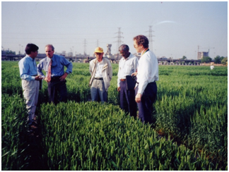

作科所“CIMMYT小麦引进、研究与创新利用”获2015年度国家科学技术进步二等奖
中国农业科学院作物科学研究所何中虎研究员主持完成的“CIMMYT小麦引进、研究与创新利用”获2015年度国家科技进步奖二等奖。
 据悉，我国小麦育种可用亲本资源短缺和品种对白粉病与条锈病的抗性频繁丧失是制约我国小麦育种研究的两大关键问题，从1990年起，何中虎研究员带领科研团队系统开展了CIMMYT（国际玉米小麦改良中心）小麦引进、研究与创新利用，历经15载，引进筛选出1.8万多份有一定利用价值的优异资源，占我国种质库中引进小麦56%；创立了分子标记与常规育种相结合的兼抗型成株抗性育种新方法，为解决品种抗病性频繁丧失提供了新思路和新方法。
据悉，我国小麦育种可用亲本资源短缺和品种对白粉病与条锈病的抗性频繁丧失是制约我国小麦育种研究的两大关键问题，从1990年起，何中虎研究员带领科研团队系统开展了CIMMYT（国际玉米小麦改良中心）小麦引进、研究与创新利用，历经15载，引进筛选出1.8万多份有一定利用价值的优异资源，占我国种质库中引进小麦56%；创立了分子标记与常规育种相结合的兼抗型成株抗性育种新方法，为解决品种抗病性频繁丧失提供了新思路和新方法。
根据9个省区种子管理站统计，1990-2014年28个品种累计推广2.24269亿亩（近3年推广1800万亩），增加社会效益133.21亿元，带动西部春麦区和西南麦区实现2-3次品种更换，CIMMYT种质对提高我国小麦产量、抗病性和改良品质起到关键作用，为全国小麦育种和生产发展乃至国家粮食安全做出了突出贡献。
根据9个省区种子管理站统计，1990-2014年28个品种累计推广2.24269亿亩（近3年推广1800万亩），增加社会效益133.21亿元，带动西部春麦区和西南麦区实现2-3次品种更换，CIMMYT种质对提高我国小麦产量、抗病性和改良品质起到关键作用，为全国小麦育种和生产发展乃至国家粮食安全做出了突出贡献。

本项目利用引进种质和创制的骨干亲本育成28个高产抗病优质广适新品种，其中新春6号、绵农4号和川麦30等分别成为新疆和四川的主栽品种。发表学术论文80篇，其中SCI论文50篇（TAG和Crop Science有关成株抗性评述性论文2篇），影响因子2.0以上23篇，总引用1095次（SCI引用762次）；中国农业科学和作物学报论文30篇。出版专译著5部，获授权发明专利5项。（通讯员 卫斐）